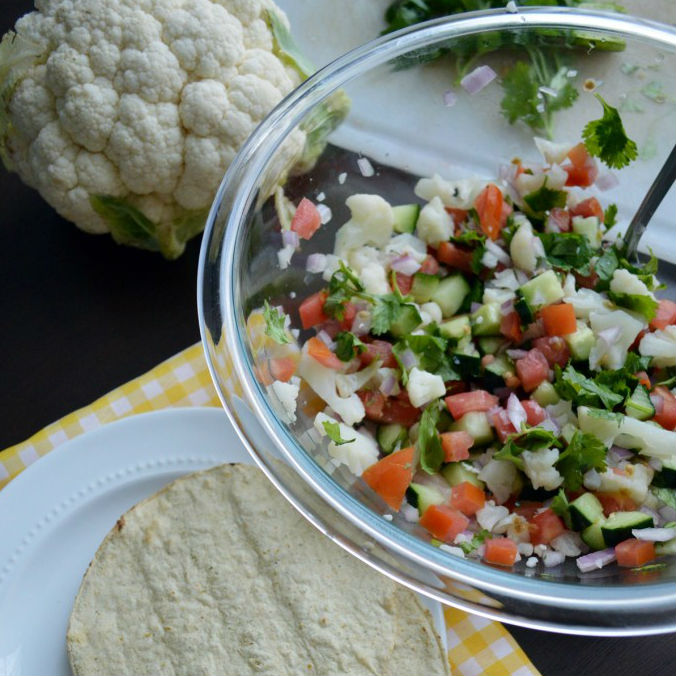

Ceviche de coliflor

- 
Ingredientes
- 2 tomates rojos, picados
- 2 tazas coliflor, en floretes chicos
- 1 taza pepino, sin semillas, en cuadros
- 1 taza mango, en cuadros
- ½ cebolla blanca o morada chica, picada finamente
- ½ taza hojas de cilantro, picadas y lavadas
- Jugo de 2 limones
- 1 pizca de comino
- 1 mango, picado en cuadros
- Sal y pimienta al gusto
- Tostadas, para servir
Elaboración
- Picar todos los ingredientes o cortar en cuadros, el tomate, el pepino, el mango, la cebolla.
- Calentar agua en una olla. Una vez que hirvió colocar los floretes de coliflor y dejar cocinar 2 minutos.
- Retirar y enfriar bajo el chorro de agua fría.
- Colocar el tomate, cebolla, coliflor, pepino, mango, culantro, jugo de limón, comino y sazonar al gusto con sal de mar y pimienta.
- Mezclar bien y servir con totopos. Puedes dejar reposando la mezcla para que los sabores tengan tiempo de mezclarse muy bien.